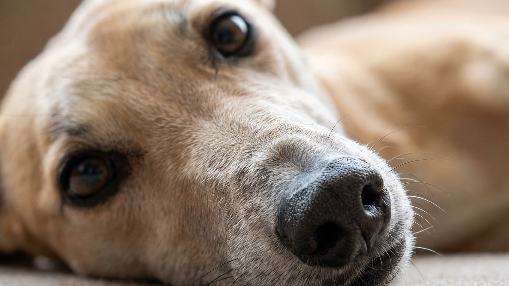

Грейхаунд держит рекорд среди собак: около 70 км/ч на коротком отрезке. Но приедьте домой к владельцу грейхаунда, и скорее всего застанете пса распластанным на диване с видом глубоко задумавшегося мудреца. Порода работает короткими взрывами, остальное время экономит. Ниже: что нужно знать будущему хозяину, чтобы грейхаунд чувствовал себя хорошо, а не мёрз и не сбегал.
🐾 У вас грейхаунд?
AnimaLife соберёт уход под породу: к каким болезням есть склонность, что проверять по возрасту, чем кормить и когда пора к врачу. Бесплатно, прямо в мессенджере.
Собрать план ухода → Собрать в MAX →
У вас iPhone? AnimaLife есть в App Store
Грейхаунд, борзая, созданная для охоты зрением и коротких преследований. Мышцы быстрые, сердце большое, лёгкие объёмные. Всё это заточено под галоп в 15–30 секунд, а не под часовой бег рядом с велосипедом.
На практике это значит: одна полноценная пробежка на огороженной площадке, и пёс спокоен несколько часов. Он не требует трёх выгулов по 40 минут. Ему нужен один взрывной выплеск и хорошая лежанка. Владельцы нередко удивляются, насколько это тихая порода в квартире.
У грейхаунда почти нет подкожного жира и совсем нет подшёрстка. Кожа натянута прямо на мышцы. При температуре ниже 10°C без одежды ему некомфортно, ниже нуля по-настоящему холодно.
Это не прихоть и не слабость. Конструкция оптимизирована под скорость: лишний вес тормозит.
Грейхаунд зрительная борзая. Увидел движущийся объект (белку, кошку, велосипедиста, пакет на ветру) и уже несётся. Команда «ко мне» в этот момент не работает: пёс в состоянии погони буквально не слышит хозяина.
Дело не в плохом воспитании. Это рефлекс глубже команд, тысячелетиями отбиравшийся за эффективность.
Многих грейхаундов в России и Европе берут из приютов для бывших гоночных собак. Такой пёс несколько лет провёл в вольере и на треке, домашней жизни не знал совсем.
Первые недели он может пугаться зеркал, лестниц, стиральной машины и кошки, которая смотрит сверху вниз. Это не агрессия и не нервный срыв. Просто незнакомый мир.
Грейхаунд выносливее, чем выглядит, но у породы есть особенности, которые стоит знать заранее.
🐾 Ваш питомец — грейхаунд?
Заведите профиль в AnimaLife: приложение запомнит породу, возраст и вес и будет подсказывать по уходу именно для неё. Вопросы AI-ветеринару — круглосуточно и бесплатно.
Завести профиль → Завести в MAX →
У вас iPhone? AnimaLife есть в App Store
🐾 Понравился разбор?
Подпишитесь на канал — каждый день разбираем по одному тревожному симптому у кошек и собак: что в пределах нормы, а когда пора к врачу. Подпишитесь, чтобы не пропустить разбор, который может спасти здоровье вашего питомца.
Материал носит информационный характер и не заменяет очную консультацию ветеринара.